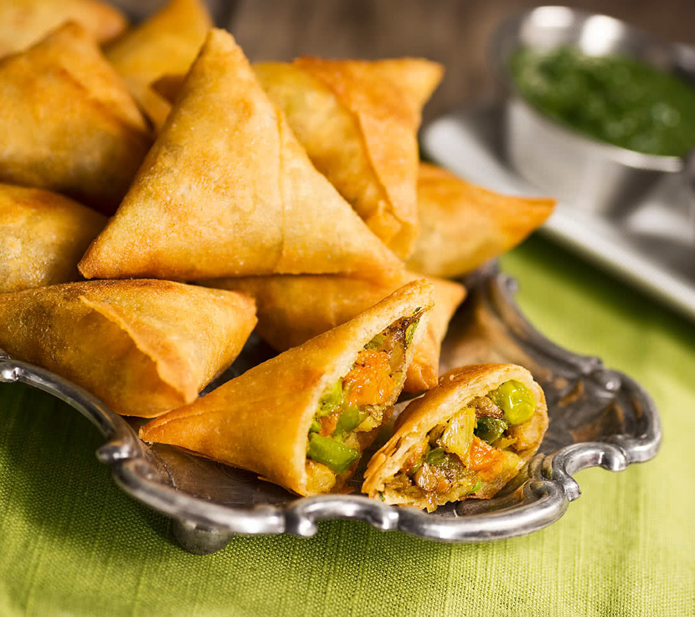
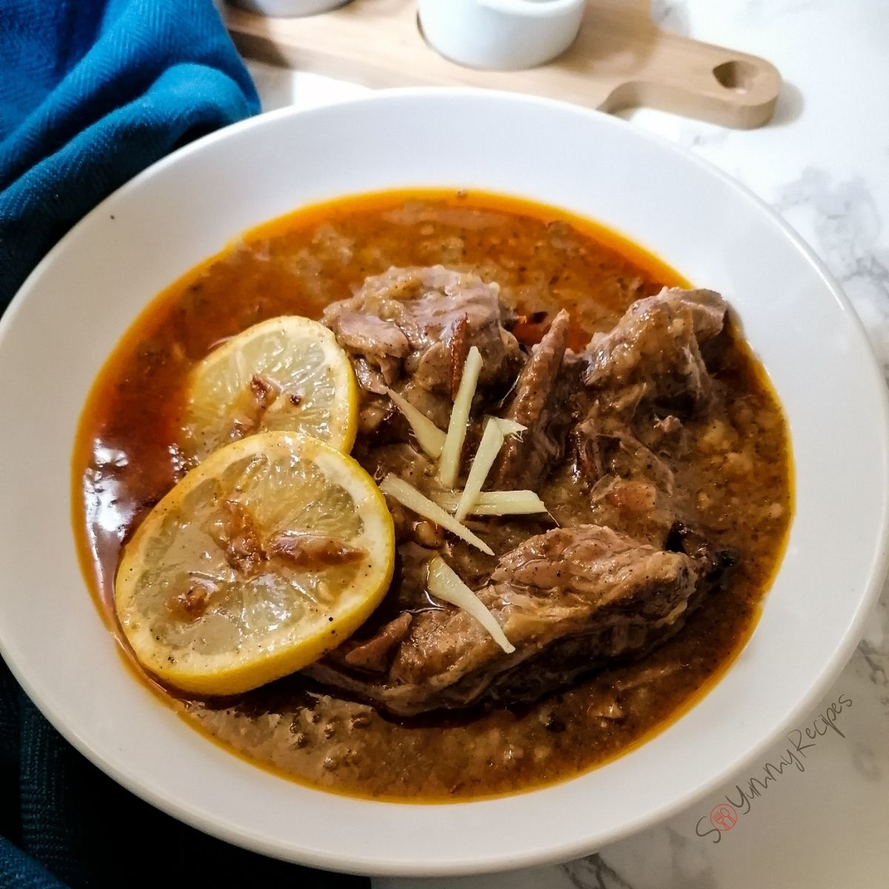
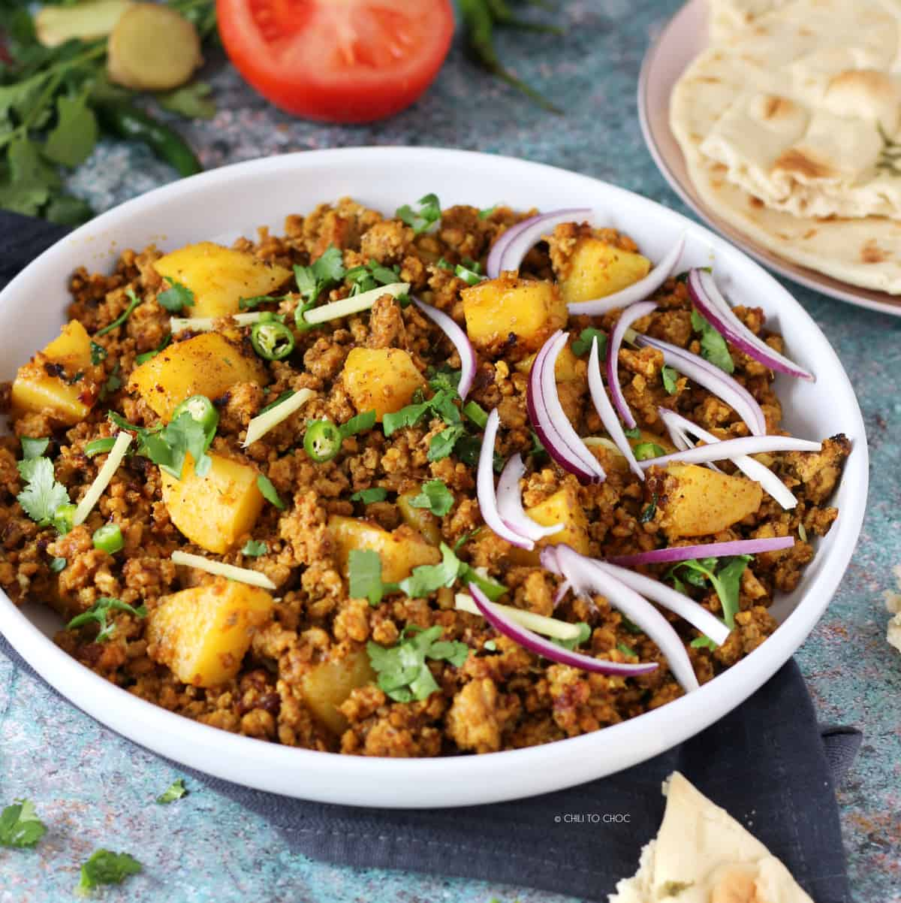

We picked Pakistan because it's a beautiful country and has amazing food, and because it has very spicy food. The most of us in the group are from another country and know the most about it, that is also why we picked Pakistan. Pakistan is a country full of muslims at least 95 percent, the others are christian or hindoes. We really like the people there; they're so funny!
Chikken Tikka
Chicken tikka is one of the most popular foods in Pakistan, both for its taste and its nutritional value—that is if it is not accompanied by “naan.” It is a sizable portion of chicken slathered in traditional spices and then grilled to perfection. For the ultimate experience, dip the pieces of chicken in the accompanying mint dressing.

Samosas
Samosas are a filling snack made out of a flour-coated triangular crust filled with green chilies, an assortment of finely chopped herbs, and boiled potatoes. You can also stuff them with various meats, such as lamb, chicken, and beef mince. These flavorful bites are so filling that you may not want a main dish afterward.
Biryani
Biryani is a mixture of delicious yellow rice and either chicken or beef. The rice gets its color from an assortment of spices and herbs, which also adds an incredible flavor. To top it off, it contains perfectly cooked lemons, tomato.

Nihari
Nihari is one of the most famous stews in the entire country. It is served to guests on important occasions and contains meat that is slow cooked and simmered in spices overnight. The cooking process allows the dish to absorb the flavorful bone marrow fully, creating one of the best-tasting meat dishes in the world.
Aloo Keema
This dish is served in almost every household in Pakistan because it is an excellent blend of potatoes and minced mutton or chicken curry. It's simple to cook but delicious.
